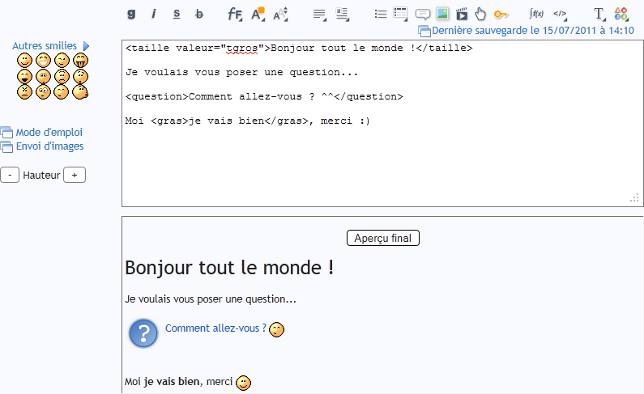
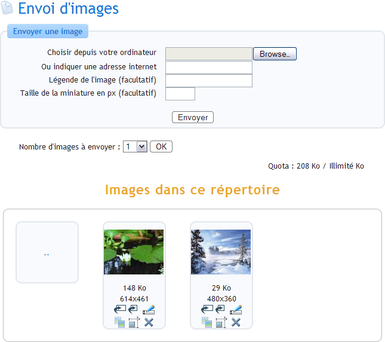

Le zCode (abréviation de "Zér0-Code") est le langage inventé par le Site du Zér0 pour la rédaction de messages sur le site.
Le zCode est utilisé à chaque fois qu'on peut écrire du texte :
Sur les forums
Sur les news
Sur les commentaires de news
Sur les tutoriels
Sur les MP
Etc etc...
Bref, si vous êtes membre du Site du Zér0, vous serez forcément amenés à vous en servir ! :)
Ce tutoriel est là pour vous présenter le zCode et toutes les possibilités qu'il offre, afin que vous puissiez en tirer le maximum. En clair, c'est quelque chose que tout Zér0 qui se respecte devrait lire au moins une fois ^^
Le zCode peut être vu comme une évolution du célèbre BBCode, dont je vais vous parler maintenant. :)
Le langage bbCode
Beaucoup d'entre vous connaissent sûrement le bbCode, très utilisé sur les forums sur Internet. C'est une sorte de "mini-langage-html" inventé par les forums phpBB, un des systèmes de forums les plus populaires du web. Peu à peu, ce langage a gagné du succès, et les autres forums ont réutilisé le même langage.
Un exemple de bbCode :
[b]Ce texte est en gras[/b]
[color=red][i]Rouge et italique[/i][/color]
Cependant, ce langage a 2 principaux défauts :
Les crochets sont utilisés, or sur nos pauvres claviers AZERTY (français en tout cas) le crochet est vraiment difficile d'accès et implique une sacrée gymnastique des doigts o_O
Il est assez basique et n'exploite pas toutes les possibilités offertes par le langage CSS et ne propose par ailleurs pas de balises sémantiques
Nous avons donc choisi de créer notre propre code sur le Site du Zér0 afin de faciliter la rédaction des messages sur le site, et de proposer plus de possibilités aux visiteurs.
Le langage zCode
Généralités
Voici, en quelques points, comment fonctionne le zCode :
Le zCode utilise des chevrons < > à la place des crochets [ ] du bbCode.
Les noms des balises sont en français et faciles à retenir. Par exemple :
<gras></gras>
La syntaxe est de type XML. Cela signifie que les balises respectent les mêmes règles que le langage XHTML pour ceux qui le connaissent (fermeture obligatoire des balises dans le bon ordre). Cela nous permet une bien plus grande souplesse du code, et l'utilisation de la librairie DomXML de PHP pour "parser" (= traduire en XHTML) les messages.
Ordre de fermeture des balises
Une seule règle très importante à connaître quand vous utilisez le zCode : vous devez fermer les balises dans le même ordre que vous les avez ouvertes.
Voici un exemple d'erreur à ne pas faire :
<gras><italique >Texte en gras et italique</gras></italique>
Voici maintenant la bonne façon de faire :
<gras><italique>Texte en gras et italique</italique></gras>
Voilà à peu près tout ce qu'il faut savoir sur le fonctionnement général du zCode. C'est pas bien compliqué ^^
Ce qu'on appelle la zForm, c'est en fait le formulaire où vous rédigez vos messages en zCode.
Voici à quoi ressemble une zForm :

La zForm
C'est un formulaire un peu particulier :
En haut vous avez la zone où vous tapez votre texte.
En-dessous vous avez un aperçu de ce que donne votre texte en zCode.
Une fois votre texte rédigé, cliquez simplement sur le bouton Aperçu final pour avoir un aperçu de votre en zCode !
Utilisez les boutons du zCode !
En haut de la zForm, vous avez un nombre importants de boutons. Ceux-ci vous permettent d'utiliser du zCode sans avoir à le connaître par cœur (ce qui est pratique quand on y pense ^^ ).
Il suffit en fait de cliquer sur ces boutons pour insérer le zCode correspondant. Il y a 2 façons de faire :
Soit vous cliquez simplement sur le bouton, et des balises zCode seront insérées. Vous n'avez plus qu'à taper le texte que vous voulez
Soit vous tapez du texte d'abord, vous le sélectionnez, puis vous cliquez sur un des boutons zCode. Le texte sera automatiquement entouré par des balises de zCode
Par ailleurs, il y a juste en-dessous de nombreuses listes déroulantes qui vous permettent d'ajouter plusieurs autres balises zCode (position, police, couleur...)
Les smilies
Sur la gauche de la zForm, vous trouverez plusieurs smilies que vous pouvez insérer dans votre message. Il vous suffit de cliquer sur le smiley qui vous intéresse.
Vous avez un grand choix de smilies. Voici quelques exemples : :) :D ;) :p :lol: :euh: :( :o :colere: o_O ^^ :-°
Mais ce n'est pas tout ! Juste au-dessus de la liste des smilies, il y a un lien "Autres smilies". Si vous cliquez dessus, une nouvelle fenêtre va apparaître avec encore plus de smilies à insérer ! Ce sont des smilies utilisés plus rarement, mais vous trouverez sûrement l'occasion de vous en servir ;)
Voici quelques-uns de ces smilies : :magicien: :colere: :diable: :ange: :ninja: Image utilisateur :pirate: :zorro: :honte: :soleil: :waw:
Les membres peuvent nous proposer de nouveaux smilies s'ils le désirent, à condition qu'ils respectent la même "apparence" que ceux que nous utilisons.
Au passage, merci à Venom qui les a créés spécialement pour nous :)
Les zUploads
Sous les smilies, vous trouverez 2 liens. Le premier ouvre le Mode d'emploi du zCode, que vous êtes en train de lire. Le second est particulièrement intéressant. Appelé Envoi d'images, il ouvre une fenêtre spéciale que l'on appelle les zUploads (on aime bien les trucs qui commencent par "z" sur ce site :lol: )
Le module des zUploads vous permet d'envoyer des images depuis votre disque, ou une URL, vers le Site du Zér0. Voici à quoi ressemble une fenêtre de zUploads :

Les zUploads
Vous remarquerez en haut que vous avez 2 moyens d'envoyer une image sur le Site du Zér0 :
Vous pouvez envoyer une image située sur votre disque dur (premier champ)
Vous pouvez indiquer l'adresse d'une image déjà présente sur Internet. Elle sera copiée sur le serveur du Site du Zér0, ce qui vous assure que l'image ne fera pas de lien mort à l'avenir :)
Vous pouvez également spécifier une légende pour votre image. Pour chaque image envoyée, une miniature de 100 pixels de largeur est créée automatiquement. Si cette largeur ne vous convient pas, vous pouvez en spécifier une dans l'option "Taille de la miniature".
Dessous, vous avez la liste des images déjà uploadées sous forme de miniatures. Pour chaque image, vous pouvez :
Afficher l'image en taille réelle, en cliquant sur la miniature
Insérer le zCode permettant d'afficher l'image directement dans la zForm
Insérer le zCode permettant d'afficher la miniature de l'image avec un lien vers l'image en taille originale (pratique si votre image est très grande)
Renommer l'image (peut aussi être utilisé pour déplacer l'image dans un autre dossier)
Copier l'image
Redimensionner l'image. Si votre image est trop grande, vous pouvez réduire ses dimensions. Un aperçu en temps réel vous donne une idée de la taille "finale" de l'image.
Supprimer l'image
Vous serez surtout intéressés par les boutons d'insertion du zCode, et de redimensionnement de l'image. Utilisez le redimensionnement d'image pour diminuer les dimensions de l'image si elle est trop grande pour être affichée sur le site, mais aussi pour réduire le poids de l'image. En effet, vous ne pouvez pas envoyer autant d'images que vous le voulez : il y a un quota maximum d'upload pour chaque dossier ! :p
Nous allons maintenant passer en revue toutes les balises zCode qui existent.
Comme je vous l'ai dit plus haut, je vous recommande d'utiliser les boutons en haut pour insérer automatiquement des balises zCode. Cependant, il est pratique de connaître le nom des balises si vous voulez les écrire "à la main". D'ailleurs, certaines balises ne sont pas accessibles en cliquant sur les boutons, il faut obligatoirement taper le zCode correspondant à la main ;)
Notez qu'il est possible de faire des listes à puces numérotées en ajoutant un attribut à la balise "liste". Voici une liste à puces numérotée "1, 2, 3..." :
Ici nous avons mis l'attribut type="1", mais il faut savoir que vous pouvez mettre différentes valeurs :
1 : 1, 2, 3...
I : I, II, III......
i : i, ii, iii
A : A, B, C...
a : a, b, c...
Citations
<citation lien="http://www.siteduzero.com" nom="Auteur de la citation">Texte cité avec un lien vers l'auteur.</citation>
<citation rid="X">Ou X est l'id du message à citer</citation>
Cet attribut est maintenant par défaut lorsqu'on choisit de citer un message par le bouton
.
Images
<image legende="Texte si l'image n'est pas disponible">http://www.site.com/image.jpg</image>
L'attribut legende permet d'afficher un texte descriptif de l'image.
Vidéos
Il est possible d'insérer des vidéos issues de Youtube ou de Dailymotion. Pour cela, indiquez tout simplement l'adresse où se trouve la vidéo Youtube ou Dailymotion que vous souhaitez insérer.
Un attribut largeur est disponible et vous permet de modifier la taille de votre vidéo. La largeur est exprimée en pixels. Par exemple, pour une vidéo de taille 700 pixels :
Vous pouvez également créer des liens spéciaux pointant soit vers Google, soit vers Wikipédia. Un attribut langue peut être spécifié si la recherche ne se fait pas en français :
<lien type="wikipedia" url="Toto">voir Toto sur la Wikipedia</lien>
<lien type="wikipedia" url="Toto" langue="en">voir Toto sur la Wikipédia anglaise</lien>
<lien type="google" url="Toto">rechercher Toto avec Google.fr</lien>
<lien type="google" url="Toto" langue="en">rechercher Toto avec Google.com</lien>
Un attribut doc permet de faire un lien vers la doc PHP ou la doc du C :
Utilisez la balise "secret" pour diffuser des informations qui ne doivent pas être vues lors de la lecture de votre message. Pour afficher le message caché, il faudra que le visiteur clique sur la zone marquée "Secret". Cette balise est particulièrement utile si vous voulez cacher la correction d'un TP par exemple (pour ne pas divulguer la réponse de suite), ou encore au cours d'une discussion sur une série télévisée pour diffuser des "spoilers" (rumeurs). Petit exemple :
Vous savez quoi ? Il paraît que le héros de l'histoire meurt à la fin ! :p
Comme vous le voyez, les champs d'application sont larges ^^
Vous pouvez aussi ajouter un attribut cache valant 1 à la balise "secret". Ainsi, la zone cachée est réduite en hauteur pour ne pas prendre trop de place. Cet attribut est à utiliser pour insérer un contenu facultatif, que le lecteur n'est pas obligé de lire :)
<secret cache="1">Vous savez quoi ? [...] Son beau-frère, Jean-Luc, l'a aidé à cacher le corps dans la grange. </secret>
Vous savez quoi ? Il paraît que le tueur est le type que personne ne soupçonnait ! Il a tué la fille avec un couteau, dans la cuisine, à 3 heures du matin. Mais en il n'était pas tout seul. Son beau-frère, Jean-Luc, l'a aidé à cacher le corps dans la grange.
Information
<information>Message informatif</information>
Avertissement
<attention>Avertissement</attention>
Erreur
<erreur>Message d'erreur</erreur>
Question
<question>Question</question>
Question
Balises zCode accessibles via les listes déroulantes
Code
<code>Code source</ code>
Notez qu'il n'y a pas d'espace entre le / et "code", cette erreur est volontaire car sinon je ne pourrais pas vous montrer la balise (la raison est simple, si vous réfléchissez un peu vous comprendrez :-° )
La balise "code" permet d'insérer un code source dans votre message ou votre tutoriel. Cette balise peut ne pas prendre d'arguments (comme l'exemple qu'on vient de voir). Dans ce cas, le code ne sera pas coloré syntaxiquement.
Si vous indiquez un argument à la balise "code" (en sélectionnant un langage dans la liste déroulante), alors votre code source sera coloré syntaxiquement de manière adaptée au langage que vous aurez choisi.
Le zCode peut colorer syntaxiquement plus d'une quarantaine de langages ! Il y a (entre autres) le XHTML, CSS, PHP, Javascript, XML, SQL, ASP, C, C++, C#, Java, Python, Pascal, Delphi, VB, Darkbasic, Ocaml, Lisp (et j'en passe). Il est même possible de colorer le langage zCode si vous voulez le présenter dans un de vos messages :D
Voici par exemple comment on colorerait un code PHP :
<code type="php"><?php echo 'Bonjour les Zér0s !'; ?></ code>
Notez que pour colorer un code PHP, il faut obligatoirement placer le tag "<?php" au début du code. ;)
Ça c'est le code minimal, mais vous pouvez rajouter un grand nombre d'attributs à la balise pour profiter de certaines fonctionnalités. Voici la liste des attributs qui fonctionnent sur la balise "code" :
titre : permet d'indiquer un titre au code qui sera affiché au-dessus
url : permet de transformer le titre en url pour faire un lien vers une page qui se rapporte au code
debut : permet de commencer la numérotation des lignes à partir du nombre indiqué.
surligne : permet de surligner certaines lignes pour les mettre en évidence. Utilisez surligne="20, 28" pour surligner les lignes 20 et 28. Vous pouvez aussi surligner une plage de lignes : surligne="20-28" surlignera toutes les lignes de 20 à 28.
Si vous devez écrire un court morceau de code et que vous ne voulez pas ouvrir de grosse balise de code, utilisez la balise minicode. Elle affiche un code source coloré sur la même ligne.
Pour insérer une image, utilisez la balise <minicode type="html"><img src="image.jpg" alt="Mon image" /></minicode> et hop, l'image s'affichera !
Résultat :
Pour insérer une image, utilisez la balise <img src="image.jpg" alt="Mon image" /> et hop, l'image s'affichera !
Mathématiques
La balise math permet d'insérer des formules mathématiques écrites en TeX :
<math>\int x^n\,dx = \frac{x^{n+1}}{n+1} + C\qquad\mbox{ si }n \ne -1</math>
Résultat :
\int x^n\,dx = \frac{x^{n+1}}{n+1} + C\qquad\mbox{ si }n e -1
Position
<position valeur="centre">Texte centré</position>
La balise position peut prendre les valeurs suivantes :
justifie
gauche
centre
droite
Flottant
<flottant valeur="gauche"> <image>http://www.site.com/image.jpg</image></flottant>Le texte qui suit entoure l'image flottante
Cette balise peut prendre les valeurs suivantes :
gauche
droite
Le langage CSS permet de créer des éléments flottants dans une page web. Tout ce qui se trouvera entre les balises "flottant" sera aligné à gauche ou à droite (selon votre choix). Le texte qui suivra l'élément flottant l'"entourera". Cela vous permet de réaliser une présentation sympathique assez facilement. Voici par exemple une image mise en flottant, regardez comment le texte l'entoure :
Taille
<taille valeur="gros">Gros texte</taille>
La balise "taille" peut prendre les valeurs suivantes :
ttpetit : Très très petit
tpetit : Très petit
petit : Petit
gros : Gros
tgros : Très gros
ttgros : Très très gros
Couleur
<couleur nom="rose">Vive le rose Barbie</couleur>
Cette balise peut prendre... beaucoup de valeurs. Je ne vous fais pas la liste des couleurs, je suis soudainement pris d'une flemme extrême :p
Police
<police nom="arial">Texte en arial</police>
Cette balise peut prendre les valeurs suivantes :
arial
times
courrier
impact
geneva
optima
Titres
<titre1>Mon titre</titre1>
Utilisez les balises sémantiques "titre1" et "titre2" pour structurer vos messages et tutoriels de manière claire et ordonnée.
Vous pouvez aussi utiliser les attributs fusion_lig et fusion_col (correspondant respectivement à rowspan et colspan pour ceux qui connaissent le XHTML ;) ). Ils permettent de fusionner des lignes et colonnes. Vous devez indiquer comme valeur le nombre de lignes ou colonnes à fusionner. Exemple :
La balise "acronyme" permet d'indiquer la définition d'acronymes, c'est-à-dire les abréviations telles que N.A.S.A., G.I.G.N, C.I.A. etc. Il suffit de passer le curseur de la souris sur l'acronyme pour voir apparaître la définition.
Indice & Exposant
2<indice>5</indice>
Ce qui donnera : 25
5<exposant>9</exposant>
Ce qui donnera : 59
Ces balises sont surtout utiles lorsqu'on parle de puissances, ou d'atomes. Elles sont disponibles en XHTML via les balises <sub> et <sup> ;) .
Les raccourcis clavier
<touche>A + B</touche>
ou
<touche>A</touche> + <touche>B</touche>
Le résultat donne respectivement les visuels suivants :
A + B ou A + B.
Cette balise permet d'illustrer plus facilement les raccourcis clavier, ce qui peut s'avérer très pratique dans les tutoriels.
Cette documentation du zCode est maintenue à jour au fur et à mesure de l'évolution du langage. Comme vous pouvez le voir, nous avons fait en sorte de vous proposer un grand nombre de balises possibles, ce qui fait que vous pouvez faire presque tout ce que vous voulez avec (en fait on est en train de plancher sur la balise <cafe></cafe> qui fait le café toute seule, on vous tient au courant quand elle est prête :D ).
Nous avons porté une grande attention à la réalisation du zCode. Nous avons passé une part importante du développement du Site du Zér0 dessus, et nous espérons que vous saurez en faire bon usage dans vos tutoriels, vos messages, vos MP etc. :)